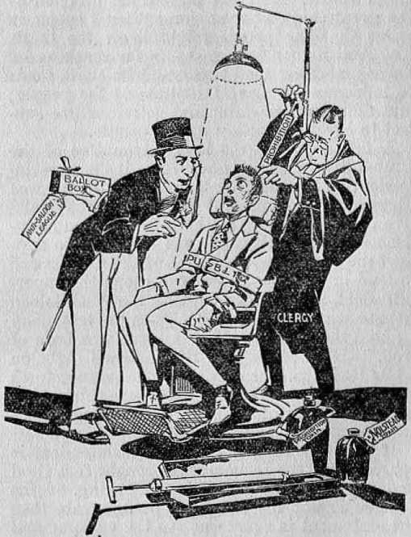
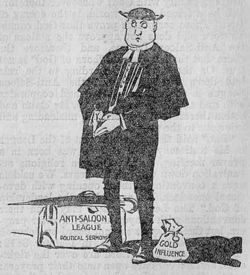
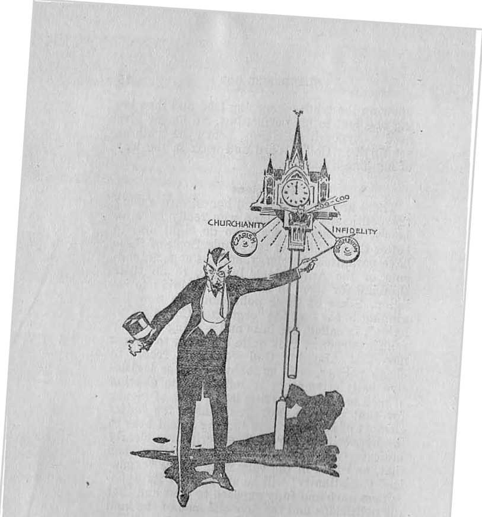
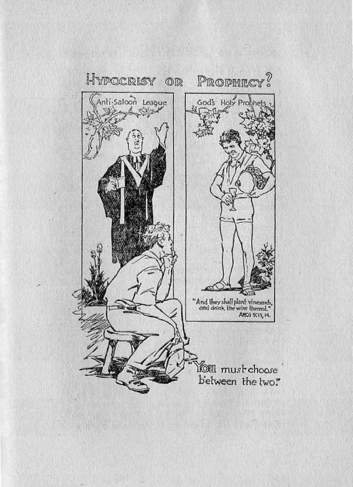

AND
Born of God or the Devil Which?
by
J. F. Rutherford
The Harp of God, Deliverance, Creation, Reconciliation, Government, Life and Prophecy are some of Judge Rutherford’s writings. Many of his publications are published in more than 30 languages. Their combined circulation exceeds 70,000,000 copies.
Made in U. S. A.
Copyrighted 1930 by the INTERNATIONAL BIBLE STUDENTS ASSOCIATION
Publisher:
WATCH TOWER BIBLE & TRACT SOCIETY Brooklyn, New York, U. S. A.
London, Toronto, Strathfield, Cape Town, Berne, Magdeburg
FOREWORD
It is claimed by many that the Prohibition law against the manufacture, possession and use of intoxicating liquor is the God-given remedy for the benefit, of man and that, the dry organizations are “born of God’’. Il is also claimed by the clergy that the League of Nations is the political expression of God’s kingdom on earth and the divine means of outlawing war. The people would like to have the Bible proof on these questions that they may study the questions for themselves.
Here it is!
The Publisher.
An address by Judge Rutherford broadcast May 18 WATCHTOWER national chain program
JEHOVAH GOD has been frequently slandered by men who claim to speak in his name. On this occasion consideration is given to what constitutes a slanderer of Jehovah God and why the people should have a keen interest in this matter. The Prohibition question discussed pro and con in America during the past decade has furnished the occasion for a great amount of slander to be heaped upon the name of Jehovah.
That I may not be misunderstood lot me emphasize the point in the outset that what I say here is not intended to influence the political issue on the question of Prohibition. I would not attempt to influence a vote either for or against it. What I have to say has nothing to do with the enforcement or non-enforcement of the Eighteenth Amendment to the Constitution. Prohibition is a political question, and I have nothing to do with the politics of this world. I am concerned with properly placing before the people the name and purpose of Jehovah God. What I say in reference to Prohibition is said solely for the purpose of showing that God is in no wise responsible for that law and has nothing whatsoever to do with its enforcement. What the people desire and need is the truth, and that I shall attempt to help them to obtain.
To slander Jehovah God means to give utterance to words that cast reproach and dishonor upon his name. Such words, being false, tend to turn the people away from God, and therefore arc to their injury. The words of dishonor and reproach can do no injury to God himself, to be sure, but they belittle him in the minds of mankind and thereby do injury to men. The welfare of the people depends upon a knowledge of God and obedience to his expressed will. If the people are given a, wrong conception of God and of his purposes the result is injury to the people. My desire is to enable the people to get a proper conception of God mid of his Word.
Slanderous words against God maybe spoken maliciously and with the intent to do injury to his name, bid. they arc more often spoken ignorantly or carelessly or to accomplish some selfish purpose on the part of individuals, and therefore work oven greater injury to the name of God in the minds of the people. When one holds himself out as the representative of God and claims to speak as such, his slanderous words do more injury than if the speech is openly against God. If one who gives utterance to the words holds a high and responsible position amongst the people, his words carry greater weight with the people; and when his words misrepresent God, then greater injury results to the people.
The Anti-Saloon League holds itself out to the people as an organization for the reformation of society and for the well-being of man. Against that organization and its desire and
"S’ALL Right,'Shut PAINFUL, rfjr Bonn of GOiX JUST OPEN YOUR MOUTH AND SHUT YOUR EYES.'
efforts to do good I have nothing to say, to he sure. But when Hint organization or its officers claim that, the act ivities thereof are directed by the great God of the universe, then I speak, in order that the people might know the truth. The Anti-Saloon League has a far-reaching influence amongst the people, and its claim tends to influence the mental attitude of the people; and therefore its claim and activities are subject to careful scrutiny by the people.
A few days ago the lobby committee of the United States Senate had before it the superintendent of the Anti-Saloon League, who was there for the purpose of giving testimony relative to the activities of that organization as influencing the election of mon to office. To support the claims and activities of the League and to lend importance to its operations the superintendent thereof testified that, the Anti-Saloon League was “born of God”. From his testimony I quote these words: “The League was horn of God. It has been led by Him aud will fight on while lie leads. The only thing that stands forth in this progressive age is that those things that are in the way of progress of the kingdom of God must get out of the way.”
If this claim made by the superintendent is correct, then the League was brought forth and endorsed by Jehovah as his offspring. If the League is not the offspring of Jehovah, then the statement is slanderous in the extreme and a reproach upon the name of Jehovah. How can it be definitely determined whether the statement is true or false? God speaks by his Word of truth, which is the Bible. He does not speak-
in this clay by the mouth of imperfect Dien. He has plainly announced his Word or rule of action and caused it to he written down in the Bible; and this Word for the guidance of men was written to guide them in the way of righteousness. In Psalm 119:105 it is written: “Thy word is a lamp unto my feet, and a light unto my path.”
Anyone who claims to be an offspring of God is bound by his Word and is for ever estopped from denying his Word. By his Word alone must men and organizations be measured that claim to be God’s offspring. Jesus was the authoritative representative of Jehovah when he was on the earth, and he never at any time attempted to speak his own words, but he frequently said he spoke only the words of wisdom which his Father Jehovah directed him to speak. In John 6:38 it is written: “For I came down from heaven, not to do mine own will, but the will of him that sent me.” (John 5: 30, 31) “I can of mine own self do nothing: as I hear, I judge: and my judgment is just: because I seek not mine own will, but the will of the Father which hath sent me. If I bear witness of myself, my witness is not true.”
It was Jesus who laid down Jehovah God’s rule by which we must determine whether or not an organization of men is from God or from God’s enemy; and that rule is announced in Matthew 7:15, 16 in these words: “Beware of false prophets, which come to yon in sheep’s clothing, but inwardly they are ravening wolves. Ye shall know them by their fruits. Do men gather grapes of thorns, or figs of thistles?”
Their Fruits •
The Anti-Saloon League claims to bring to the people that which will give them life and happiness, but, instead, that which results from its operations has been and is wrongdoing, injustice, suffering and death. The fruit brought by this organization has therefore not been lifesustaining or healthful, but has worked exactly to the contrary. The Anti-Saloon League says: “We are opposed to the saloons" So far, so good. But how shall the evil be eradicated'? To that the organization answers: “By bringing forth the law which we call Trohibitinn’ and enforcing that law.” The result is, I he open saloon has ceased to exist in many places, but in its place are found secret resorts for obtaining intoxicating liquors, and there is also found a flask of vile liquor in the hip pocket of almost any young man attending the high schools and colleges and nt the various social events. Thore is a widespread and secret consumption of the death-dealing liquor amongst the youth of the land.
The League methods of operation have brought, into existence what, is known as the bootlogger, lie obtains cheap whiskey and makes it much worse and then peddles it out amongst the people at an exorbitant price and much suffering and death results therefrom. The bootlegger enriches himself with dollars and debauches many persons. No one could truthfully claim that God endorses such.
A great army of officers are appointed to positions by the government and authorized to enforce the Prohibition law. These men are armed with deadly shotguns and told to use them when in their judgment it is necessary. The professional rum runner gets by this army of armed officials provided he makes a sufficient split of his profits. The poor and harmless citizen driving along the highway, and who is called upon to halt and fails to do so instantly, is immediately shot down dead by a member of the army of office holders upon the pretext that he (the officer) thought that the man had in his possession unlawful liquor. It is often found that the poor man had nothing of the kind and that his death was wholly unjustified. The official records published some months ago show that at that time there had been 1,360 persons killed in the abortive attempt to enforce the Prohibition law.
The Anti-Saloon League says that the acts of these officials in shooting down innocent men is justified because they are slaying in a righteous cause. Quite frequently these officials who take possession of liquor wrongfully possessed by offenders appropriate it to their own use and in violation of the law sell it to others. The operations of the Anti-Saloon League therefore encourage lying, stealing and murder. All of these things are denounced by the Word of God. These fruits that the League and its supporters bear to the people prove beyond any question of doubt that the Anti-Saloon League is not the offspring of God and does not have his approval in any respect whatsoever.
Politics
The Anti-Saloon League is composed largely of professional religious leaders who claim to preach the Word of God but never do so. On the contrary, its activities are devoted chiefly to politics. The superintendent of the Anti-Saloon League stated before the Senate Committee that ninety percent of the League’s activities cluster about the election of men to office. Great sums of money are expended to influence the election and appointment of men to office that the League's policy may be carried forward. In other words, the League has made itself a part of the politics of this world. In so doing the League is acting exactly contrary to the Word of God. Instead of following the lead of Jesus Christ, the course of the Anti-Saloon League is exactly contrary thereto.
When Jesus was on earth lie devoted himself to teaching the people concerning his kingdom to come by and through which God would bring refreshment and blessing to the people.In John 18: 36, 37 ho stated: ‘Aly kingdom is not of this world. My kingdom is future. I came into the world that I should bear witness to the truth. Everyone that is of the truth and therefore of God does likewise? Never at any time did Jesus have anything to do with the politics of the world; but, on the contrary, he held himself entirely aloof therefrom. To his disciples he said: ‘You are in the world, but not of the world: I .have chosen you out of the world. If you were of the world the world would love you.’ 11 is disciples so understood it and they re-
ANTI-SALOON LEAGUE
POLITICAL SEftMOW
fused to have anything to do with the politics of the world.
Concerning this point it is written, in James 4:4: "Know ye not that the friendship of the world is enmity with God ? whosoever therefore will he a friend of the world, is the enemy of God.” These scriptures prove that God cannot approve and does not approve the actions of the Anti-Saloon League, and therefore the claim that the League was “born of God” is not true. On the contrary, according to the rule laid down in God’s Word the Anti-Saloon League is the enemy of God and cooperates with and acts with God’s enemy. Its claim and action therefore is hypocritical, misleading and injurious to the people.
"But,” said the superintendent of the League in his testimony, "the League was horn in a prayer meeting, and has been a religious organization down through the years. We seldom have a convention without opening with devotional exercises. We are led by the leadership of God.” The League leaders may open their conventions with prayer and often utter prayers, hut their prayers are not heard by Jehovah God; because it is written, in 1 Peter 3:12: "For the eyes of the Lord are over the righteous, and his oars arc open unto their prayers: hut the face of the Lord is against them that do evil.”
Only those who are in Christ and ask according to the Word of God have any promise of receiving an answer to their prayers. (John 15:7) The righteous are those who exercise faith in the shed blood of Christ Jesus, who de-
vote themselves to God, and who are guided by the Word of God. Not one word in the Bible can be found in support of the Anti-Saloon League and its operations; but, on the contrary, the League itself admits that it is a part of this world, and therefore the enemy of God.
Who Is God?
Who is the god of this unrighteous world? Jesus answered, in John 12: 31 and 14: 30, that Satan the Devil is the invisible ruler or god of this world. This Scriptural statement is further corroborated by the words written in 2 Corinthians 4:3, 4, wherein it is stated that Satan, the god of this world, by fraud and deception blinds the minds of men to thctruth.lt is doubtless this god, the god of this world, to whom the prayers of the leaders of the Anti-Saloon League ascend. Surely they do not reach Jehovah God’s throne.
The great mistake men have made is this: They have organized themselves into bodies with the expressed desire to accomplish a reformation work. They call themselves a religious body. They have and perform a form of godliness but deny God’s power and utterly ignore his Word. "XVliile claiming to be the offspring of God, they do exactly contrary to what God has commanded his offspring to do. When an organization claims to be the offspring or representative of God and brings forth results like that of the Anti-Saloon League, what is the effect upon the people? Here, now, is the important question; and the answer is well known.
Responsible men and women conclude that if this organization belongs to God, then he must be a very weal: and powerless God. They say in substance: 'If that is the best God can do to clean np and reform the world, then we are better off without such a God. We will not follow him, nor will we have any confidence in him.’ There are millions of good-hearted persons who have reached that very conclusion, and this is well known by almost all.
What, then, is the net result the League has brought to the people? The answer is that the League is playing into the hands of Satan the enemy and causing many persons to hate and turn away from God and to ignore and despise his Word. The worst crime of the 2\.nti-Saloon League is therefore that of slandering God and turning the people away from him, to the great injury of the people. If the League would merely claim to be against the liquor business as men, and refrain from trying to hide their activities behind Jehovah, then no Christian could object. On the contrary, when they claim that their deadly fruits are endorsed and approved by Jehovah, then it, becomes the duty of one who loves God to speak up.
The Truth
A Imowledgo of the truth will turn the people to God and show them how he will completely reform and clean out all the undesirable tilings of this world. Hypocrisjr will do the very opposite; namely, it will turn the people away from God and keep them in ignorance.
"Organized Christianity,” so called, has made itself a part of the world; and because it constantly plays into the hand of Satan and slanders God, "organized Christianity” is the greatest instrument of hypocrisy that has ever existed. "Organized Christianity” claims to stand for God. It takes the name of Christ, and yet its entire course of action is against God and against Christ. Such is hypocrisy of the worst sort. "Hypocrisy5 means to lay claim to doing one thing and then to do exactly the opposite thereof. The common people, seeing the inconsistency of the leaders of "organized Christianity"’, in disgust and despair turn away from God and from his Word, the Bible. True Christianity, which feeds upon the Word of God, will lead the people into the light of the truth, because true Christianity stands solely for the kingdom of God and his Christ.
God created Lucifer a perfect creature and gave him an organization and made perfect man a part thereof. Lucifer rebelled against God and led man into degradation. Since then Lucifer has been known as Satan, the Devil, and the arch enemy of God. God has permitted him to take his own course of wickedness and to continue therein until God’s due time to destroy Satan’s organization and to set up his righteous government under Christ. Satan the Devil challenged Jehovah to put a man on earth who could and would maintain his integrity with God under stress. Jehovah God accepted that challenge, and from the day of Abel until now God has at all times had a few men on earth who have maintained their integrity under opposition. The greatest of all was Christ Jesus, who withstood the assaults of the enemy, overcame the world, and by his death provided redemption for the human race. God raised Jesus up out of death and gave his Word of promise that in due time he would send Jesus again to set up his government of righteousness for t he benefit of man.
Now the time has come when God has set Christ Jesus upon his throne, and he becomes earth’s rightful Ruler. The next great act on the part of Christ is to completely destroy Satan’s cruel and wicked organization which now dominates the earth. That climax the Scriptures declare will come in the battle of Armageddon, to which all the powers are now rapidly approaching. As stated in the twelfth chapter of Revelation, Satan knows that his time is short, and hence he puts forth his last desperate attempt to turn all the people away from God. Being the arch deceiver, he resorts to fraud and deceit to accomplish his purposes.
Angels of Light
Men form organizations, such as the AntiSaloon League. Many good men and women enter the organization with a good intention. The League makes extravagant claims that it is a religious organization '"born of God” and that it will bring blessings to the peoples of the earth. The fanatical religionists rush to the support of the organization without giving serious thought to its claims or to any evidence in support thereof. The professional politicians align themselves with the organization because they expect to use it for personal gain. A great multitude of order-loving people, seeing the hypocritical claims of the organization and its actions, turn away from it and from the God it claims to represent, and the net result is that all are turned away from a proper understanding and service of Jehovah. God. That is Satan’s very purpose. He has his messengers to appear as reformers or 'messengers of light’ for the very purpose of deceiving good people and turning them away from the true God. To be sure, G od foreknew this; and long ago he caused to be written in his Word a warning against this very thing. ‘‘For such are false apostles, deceitful workers, transforming themselves into the apostles of Christ. And no marvel; for Satan himself is transformed into an angel of light.”—2 Cor. 11:13-15.
Satan and his ministers appear as reformers and messengers of light to deceive the people. I have no hesitancy, therefore, in saying that Prohibition in America is a scheme of Satan the Devil, the purpose of which is to alienate the people from Jehovah God. "Organized Christianity,” by its leaders, has made that system a part of this world and no longer do the clergymen preach the Word of God.
What, then, shall the people do 7 I answer that the people must devote themselves to a study and an understanding of the Word of God. There is a Bible in almost every home. There are books now published and widely distributed that enable the people to find in their Bible where these great truths are and to understand the meaning thereof. These are now within the reach of all people, and the fact that Satan opposes their distribution and publication shows that they disclose the truth. Honest people desire to see wickedness cleaned out of the world and to see righteousness fully established. They know that this cannot be accomplished by organizations such as the Anti-Saloon League. God’s Word shows that it can be accomplished fully and completely by and through his righteous government. That government is now at hand and will bring the full and complete desire of the people.
There is a book named Government that contains a full and complete discussion of the Bible texts concerning the preparation and setting up and operation of the righteous rule of the Lord. Every man and woman should know the truth it contains. Many of you have it. All should have it. I urge you to read it carefully, together with your Bible, and thereby learn that God’s righteous government through Christ will clean all the wickedness out of this world, will completely eradicate the illicit liquor business, will wipe out all the cruel and wicked practices amongst the people, and will bring to the people purity of government, and purity in righteousness of daily life, and peace and happiness, prosperity and plenty; and that all the obedient1 ones under that government will receive the blessing of life everlasting,
It is written, in John 17: 3, "This is life eternal, that they might know thee the only true God, and Jesus Christ, whom thou hast sent.” Everlasting life in happiness is what the people desire. They can have everlasting happiness by
knowing the truth concerning God and then being obedient to his perfect law. No longer give heed to hypocritical claims. Learn the truth as set forth in God’s Word and walk in the way of happiness and life.
Politicians
There are some good and honest men among the politicians of the land who really have an honest and sincere desire to do right and to better the condition of the people. Some of these have permitted the clergy, such as superintendents of the Anti-Saloon League, to do their thinking for them in matters pertaining to religion. Some of these politicians are now beginning to see that the “organized Christian religion”, so called, has been and is being used for selfish purposes. It is quite apparent to honest men that Almighty God would not resort to cheap politics, such as lobbying in the legislative halls attempting to influence the election of men to office and using large sums of money for that purpose. For this reason the better element of statesmen are turning a deaf hear to the hypocritical clergy. The Scriptures clearly indicate that they will go much further than that, and that in the very near future "organized Christianity” will be stripped of its hypocritical garb and fully exposed to view and that the politicians and the financial men of the land ■will completely repudiate it.
There has been much said in the public press about the opposition to religion in Russia. It is well to remember another fact, namely, that for many years Russia was one of the leading
so-called "Christian nations”. The czar of Russia was the head of the church. Great oppression and wrongdoing was carried on constantly in the name of Christianity. It was the religionists of that country that put the people into the war and from which they have suffered very greatly. The people have come to see much of the hypocrisy of the so-called “Christian religion” of that land, and now the pendulum has swung far to the side of infidelity and to an open opposition to God. The Devil is accomplishing his purpose. His chief purpose always is to turn the people away from Jehovah.
In the seventeenth chapter of Revelation it is written that just preceding Armageddon the political and financial elements of the world will withdraw their support from “organized Christianity”, so called, strip her of her hypocrisy, and expose her and make her desolate, and that Jehovah God will put it in the minds of these men thus to do. God has been long-suffering and has not taken action against those who have slandered his name; but he gives his word that he will do so, and that he will so fully vindicate his great name and Word that all may readily see that he is the God of justice, wisdom, love and power.
Au address by Judge Butherforil broadcast May 25 WATCHTOWER national chain program
JEHOVAH caused the Bible to be written for the instruction of men in the way of righteousness. He who desires to have an understanding of the right way to go may with con-fidenee look to the Bible for instruction. This is particularly true at the end of the world, when the greatest of all conflicts is approaching. Every one who has an honest and sincere desire to pursue a course of righteousness, and who believes that the Bible is God’s Word, will he anxious to learn of its teaching. Honest people desire to have something upon which to base a hope for the future. That desirable thing is found only in the Bible. In [tomans 15:4 it is written that The things contained in the Bible were written for our learning, that we through comfort of the Scriptures might have hope’. Again, it is written in 1 Corinthians 10:11 that ‘these things were written for our admonition upon whom the ends of the world are come’. The proof is abundant that we arc now at the end of the world and that wo are in the transition period and that all power and authority that Satan has will shortly be taken away from him and that Christ will exercise all power and authority for the good of mankind.
Among'other things written in the Bible for the instruction of men who want to walk in the 22
way of righteousness are the words of God’s prophet recorded in Psalm 19:13, which read: "Keep back thy servant also from presumptuous sins; lot them not have dominion over me: then shall I be upright, and I shall be innocent from the great transgression.” This conclusively proves that the Christian or man of God is in danger of 'committing presumptuous sin’, which leads to the great transgression, and which is to become a part of Satan’s organization. The words here recorded constitute a prayer of those who desire to be guided aright that they shall not fall into presumptuous sins. If man holds himself out as a teacher of God’s Word and then wilfully misrepresents that Word and assumes to do what God’s Word does not authorize him to do, then he is guilty of presumptuous sin.
Defined
An act of presumption is properly defined in this manner: To assume authority to do an act and then to perforin that act without first having received authority so to do. It means to do what one is not warranted in doing. "Sin” means the transgression of God’s expressed will or Word, which is his law. To assume authority to do an act in the name of God when no such authority has been given to so speak or act in the name of God, and then to perform the act, is clearly a presumptuous sin, as defined by the Scriptures,
The facts upon which all will readily agree are these: That the Anti-Saloon League claims to be a religious organization, "born of God” ; that it and other like organizations, and particularly the Protestant clergy forming a large part thereof, have long claimed and yet claim to represent God in America; that these organizations and the men therein call themselves Christian or. religious.; that they, and particularly the clergy therein, have long advocated the prohibition of the manufacture, possession and use of intoxicating beverages, wines, or other drinks; that during the stress of the World War these so-called religious organizations, and particularly the clergy, took the lead in inducing and causing the adoption of the Eighteenth Amendment to the Constitution of the United States, and that since its adoption they have been the chief advocates of the rigid enforcement of the Prohibition law. Tt will be further conceded by all that America claims to be a Christian nation, that is Io say, to accept Christ as its example and teacher, and that it is in America where the Prohibition law exists and is enforced.
My purpose here is to submit the proof that the Prohibition law is in derogation of and therein in violation of God’s law, and hence is an act of presumption; Ilia! those who claim to believe in and serve God and who participate in making and enforcing the Prohibition law are guilty of presumptuous sin before God. The people or nation that makes no claim to belief in or the worship of God and that has no knowledge of God and his Word might enact a Prohibition law and enforce it and not be guilty of presumptuous sin. At least there would not be the same degree of guiltiness as that upon pro-
fessed Christians. I shall submit the facts and the law of God upon the question at issue and let the people determine whether or not the advocates of the Prohibition law are guilty of presumptuous sin.
Wine
Wine is a beverage or liquor made from the juice of grapes and allowed to ferment. The alcoholic content thereof produces intoxication when used to excess. There could be no wine without fermentation, and fermentation is the result of a natural law which the great Creator God made. In Genesis the ninth chapter it is recorded that Noah planted a vineyard, gathered the grapes that grew therein, and made wine from them, and drank the wine and became intoxicated.
To say that bioah did that because he was ignorant of the natural law of fermentation would be foolish. The record shows that he planted the vineyard with full knowledge that wine by fermentation would result, otherwise why did he press out the juice from the grapes and wait for it to ferment before he drank it? Had he desired only the grape juice he would have pressed out the juice and drunk it immediately. The flood had nothing to do with the operation of fermentation, as has been improperly claimed. God was not displeased with Noah and did not subject him to a fine, imprisonment or other punishment for making and possessing wine; but long thereafter gave to him the very highest commendation. (Ezek. 14:14) In the eleventh chapter of Hebrews again Noah is
specifically commended for his faithfulness and devotion to God and it is plainly stated that he had God’s full approval. Notwithstanding this, Noah has been repeatedly denounced by the Anti-Saloon League and the clergy.
Later Abraham, who had performed a great and good act of faithfulness to God. was met by Melchizcdek, the priest of the Most High God, and served with wine by God’s priest and received God’s blessing, and this record is made in Genesis 14:18, 19. The clergy would today incarcerate both Abraham and Melchizcdek in prison for so doing.
God anointed Aaron to serve in the office of High Priest and to serve in the tabernacle; and, in Leviticus 10: 9, he commanded Aaron not to drink wine or strong drink "when ye go into the tabernacle”. But when the service in the tabernacle was done he might drink it. The Lord did not prohibit him from manufacturing or having it in possession. Even those who were specially consecrated to God were told that they could drink wine at certain times.—See Numbers 6:20.
In giving instruction to the Israelites concerning their offerings at the tabernacle God used these words, in Numbers 28:7: “In the holy place shalt thou cause the strong wine to be poured unto the Lord for a drink offering.” No one would question that the Lord approved this, because he commanded it.
When King David brought the ark of God from the wilderness and placed it in Jerusalem he made a great feast for the people and they were all served with good wine, and this had
God’s approval, as recorded in 2 Samuel 6: 1.5-19. In Psalm 104 the prophet is praising God for his abundant provisions for his creatures, and among other good and blessed things thus provided by the Lord he names these: “He causeth the grass to grow for the cattle, and herb for the service of man, that he may bring forth food out of the earth; and wine that maketh glad the heart of man, and oil to make his face to shine, and bread which strengtheneth man’s heart.” (Ps. 104:14, 15) Instead of prohibiting the making, possession and use of wine, God himself provided it for his people.
It cannot be successfully argued that these scriptures, because taken from the Old Testament, no longer apply. The entire Bible was written for the instruction of men in righteousness, and the Old and New Testaments are in full accord with each other. It is written in 2 Timothy 3:16: “All scripture is given by inspiration of God, and is profitable for doctrine, for reproof, for correction, for instruction in righteousness.” Jesus and the apostles quoted frequently from the Old Testament and showed that the Old Testament announces God’s rule as applying to all his creatures.
The words and acts of Jesus are recorded in the New Testament. He performed miracles for the purpose of establishing the faith of the people in him as the Messiah sent from God. Would it be at all reasonable that in the performance of miracles for this purpose Jesus would use anything in connection therewith that God had prohibited or '.hat was at all displeasing to God? Certainly not; because he
28 bohn or god PROHIBITION or the devil? repeatedly stated that he came to do not his own will, but the will of his Father who sent him. (John 5:30; 6:38) Therefore what Jesus did had the full approval of God his Father.
The first miracle that Jesus performed was that of making wine. The record thereof is found in John 2:1-11. He was present at a marriage feast at which all the guests were drinking wine which the bridegroom had provided, The supply on hand was exhausted. Being called upon to do something for the guests in the way of supplying wine Jesus then and there performed his first great miracle by making wine from water. The divine record shows that it was even better than the other wine. Some of the prohibitionist clergymen, not being able to answer these plain statements of God’s approval upon the making of wine, have had the temerity to tell the people that the wine Jesus there made on that occasion was merely unfermented grape juice. The clergy expect the people to believe their statement beause they claim that no one else can teach the Scriptures aside from them. In proof that it was genuine, fermented wine, the record plainly reads: '‘The governor of the feast called the bridegroom, and saith unto him, Every man at the beginning doth set forth good wine; and when men have well drunk, then that which is worse: hut thou hast kept the good wine until now.” No man would say that about unfermented grape juice. He did not know that Jesus had made this wine, but he did know it was the best wine, and that proves it was not merely plain grape juice.
The Pharisees who composed the clergy when
Jesus was on earth, and whom Jesus .denounced as hypocrites, accused Jesus of being a winebibber. (Matt. 11:19) Manifestly they did this because Jesus indulged in the moderate use of fermented wine. Had he been drinking plain grape juice they would have said nothing about it. Had God intended that the making, possession and use of wine should be prohibited, Jesus certainly would not have drunk any of it whatsoever. ile kept God’s law in every particular.
The Pharisees accused Jesus of wrongdoing because he ate and drank with the poor or common people. They were not drinking unfermcnt-ed grape juice, but were evidently drinking good wine, which represented good cheer, and this they were doing because Jesus was with them and they were glad. To illustrate the happiness of the occasion, Jesus spoke in response to the Pharisees’ accusation and used these words: “And no man putteth new wine into old bottles; else the new wine will burst the bottles and be spilled, and the bottles shall perish. But new wine must be put into new bottles; and both are preserved. No man also having drunk old wine straightway desireth new; for he saith, The old is better.” (Luke 5:37-39) Who ever beard of unfermented grape juice’s causing bottles to burst? The clergy will have to find some other arguments.
These scriptures I cite to show that God does not prohibit the making, possession or use of intoxicating wine or strong drink, but that, on the contrary, he approves the making, possession and moderate use thereof. This fact of itself is proof that the so-called “Anti-Saloon
League” is not "born of God” and does not have God’s approval and has no authority to speak for God, and that its claim to represent God is false.
Use
Let it be clearly understood that I am not advocating the manufacture or use of intoxicating wine or strong drink. If the people desire to make a law prohibiting the use of wine, tobacco, bread and meat, they must take the responsibility thereof. But let no man mislead the people, and induce them so to do, by claiming that God approves such course of action. I am of the opinion that the American people were hoodwinked into adopting the Prohibition law because of the claim of the clergy and their allies and so-called “religious organizations” that God wanted them to do it. I am certain that back of the whole scheme of Prohibition is the master mind of Satan and that his purpose is to use this Prohibition fiasco to turn the people away from Jehovah God.
Just before the death of Jesus he instituted the Memorial of his death by the breaking of bread and by producing wine and inviting his disciples to drink of it. (Matt. 26:27) If wine were displeasing to God, then Jesus would not have used it on that occasion. Furthermore, Jesus commanded that his followers should continue to perform this ceremony once each year until the coming of his kingdom. If the prohibitionists have their way, no wine can be had for use in obedience to this commandment
of the Lord. The fact that the Lord used wine on this occasion is conclusive proof that its making, possession and use has the approval of God.
Moderation
God made the grapes and the wine therefrom for men and purposed that men should use it in moderation and for their own good; and that being true, no body of men has the right in the name of God to prohibit the possession or use thereof. The Bible defines the qualifications of those who should be ordained to serve in the church of Christ and, among other things, it states that such shall not be given to ‘‘much wine” (Titus 2:3; 1 Tim. 3:3-8) Manifestly this is proof that it is pleasing to the Lord for them to make and possess and use it in moderation. (1 Tim. 5:23) This instruction is given to one of God’s servants: 'Use a little wine for thy stomach’s sake.” Under the law of America the man who obeys this Biblical injunction is subject to fine and imprisonment. Those who insist on the law and its enforcement therefore falsely claim to represent the Lord. The law of God does not advise men to use wine to excess and become drunk; but, on the contrary, it is written, in Philippians 4:5: “Let your moderation be known unto ah men.”
It is true that there has been a great amount of sorrow and suffering amongst men by reason of the excessive use of wine and strong drink. It is also true that there has been even greater suffering from other excesses. The improper
32 born or god PROHIBITION or the devil? and excessive eating of food doubtless has killed more people than excessive drink. The Word of God especially denounces a glutton, but it does not prohibit the people from eating in moderation. Likewise God's Word denounces the excessive use of wine or strong drink to the point of drunkenness, but it does not prohibit the manufacture, possession or use of wine.
Prohibition cannot be justified on the ground that it is necessary for the reformation of the peoples of the land. More than ten years’ effort in this behalf has failed to bring about any reformation. A stronger reason, however, is that the prohibition of the manufacture, possession and use of wine and strong drink is not God’s way of reforming excesses. If God has defined a means by which he will cleanse the world of unrighteousness, then for men or the organization of men to follow a different way not only is taking a wrongful course, but is presumptuous. Particularly is this true if the organization and the men thereof claim that God approves their course of action. Even if God had expressed his determination to destroy completely the use of intoxicating liquor in his due time and manner, any effort on the part of man to destroy it in a different manner and before the due time would be presumptuous, and, being contrary to God’s law, would constitute a presumptuous sin. Such a course would be complete evidence that the man or men thus attempting to do were proud, arrogant and running ahead of God and assuming to know more than. God himself knows.
God’s Method
Jehovah God lias plainly stated in his Word that excesses, wrongdoing and all manner of sin leading to death had their beginning with the rebellion of the wicked one Satan the Devil. Its continued practice has been the result of Satan’s influence, God has given his promise that in due time he will establish a righteous government in which Christ shall be the invisible Ruler, and that under his righteous rule all excesses, crime, wickedness and wrongdoing of every kind shall be completely eradicated. His instruction to those who claim to obey him is that they shall teach the people that he is the true God of righteousness, to the end that the people may learn the truth and wait upon God to establish his kingdom and to bring about the desired condition. Concerning this, through his prophet he says, in Zephaniah 3:8, 9: "Therefore wait ye upon mo, saith the Lord, until the day that I rise up to the prey; for my determination is to gather the nations, that I may assemble the kingdoms, to pour upon them mine indignation, even all my fierce anger: for all the earth [unrighteous organization] shall be devoured with the fire of my jealousy. For then, will I turn to the people a pure language, that they may all call upon the name of the Lord,.to serve him with one consent.” A knowledge of God and his righteousness will affect the reformation of the people, and not the shotgun enforcement of prohibition laws. Furthermore, it is written, in Isaiah 26: 9: "When thy judgments are in the earth, the inhabitants of the world will learn righteousness.”
But certain leagues composed of men, and led chiefly by clergymen of the laud, say in substance: ‘We speak for God, and we have concluded that we will clean up the earth now, and not wait for the Lord to do it. We will begin by making it a crime to have in possession or to use wine or other strong drinks. And we will insist that any one who violates this law must he severely punished; and if the officer of the law shoots down a supposed violator he will be justified because he is engaged in a righteous cause.’ In so doing they are assuming to run ahead of God and to do what God has not authorized them to do; and therefore their act is clearly a presumptuous sin before God.
Under Christ’s Eeign
The Scriptures explicitly prove that the manufacturing, possession and use of wine will not be prohibited in God’s kingdom under Christ. This being true, then the clergymen and their allies, by now attempting to make and enforce Prohibition in the name of Christ, are doing contrary to the law of Christ’s kingdom and therefore are guilty of presumptuous sin. In the Scriptures the word “wine” is used both literally and symbolically; but regardless of the manner in which it is used, if the manufacture, possession or use were wrong, surely God would not use it in his Word, even to illustrate the blessings and joy that shall come to the people. The wTord “mountain” is used symbolically in the Scriptures to represent God’s kingdom under Christ, and concerning the blessings that shall come to the people under his righteous rule it is written (Isa. 25:6): “In this mountain [kingdom] shall the Lord of hosts make unto all people a feast of fat tilings, a feast of wines on the lees, of fat things full of marrow, of wines on the lees well refined.” This scripture must he taken both literally and symbolically.
Literally in this, that under the reign of Christ there will be an abundance of food supply for all the people, so that none shall be hungry any more. And there shall be an abundant supply of wine well refined, rich and nourishing, also, for the sustenance, use and wellbeing of the people.
Symbolically in this, that there will he an abundance of food of truth for the mind that the people may learn the truth, and know what is right and do it, and their efforts will be attended with great joy and rejoicing to the glory of God; and the wine well represents that joy and rejoicing to the glory of God. If it were wrong to have wine, then it would be wrong to have food, because God mentions them together. If it is wrong to have either food or wine, then God would not use these words in the manner in which he does use them. It is right in the sight of God to have in possession and use both food and wine; and therefore the attempt to prohibit such is in violation of God’s law and is a sin of presumption.
Under the reign of Christ the people will be well cared for and abundantly supplied. By his prophet Joel he says: “Yea, the Lord will answer and say unto his people, Behold, I will send you corn, and wine, and oil, arid ye shall be
satisfied therewith; and I will no more make yon a reproach among the [nations]. And the floors shall be full of wheat, and the fats shall overflow with wine and oil."—Joel 2:19, 24.
To the same effect God’s prophet Amos wrote: “Behold, the days come, saith the Lord, that the plowman shall overtake the reaper, and the treader of grapes him that soweth seed; and the mountains shall drop sweet wine, and all the hills shall melt. And I will bring again the captivity of my people of Israel, and they shall build the waste cities, and inhabit them; and they shall plant vineyards; and drink the wine thereof; they shall also make gardens, and eat the fruit of them.”—Amos 9:13, 14.
If the Eighteenth Amendment and the Volstead law are right and in harmony with God, then God's prophet was wrong in foretelling of God’s provisions for the people during the reign of Christ. Which do the people care to believe, Volstead and the Anti-Saloon League and the arrogant clergy, or Jehovah God and his holy prophets? You must choose between the two.
Let it be clearly understood that I am not advocating the violation of the Prohibition law. I am not even asking the people to repeal the Eighteenth Amendment to the Constitution. The clergy and the Anti-Saloon League and their kindred organizations have forced this law upon the people, and now let them bear the responsibility before God.
I wish to emphasize the fact that men of any organization claiming to represent God and claiming that God endorses and approves their action of making and enforcing the Prohibition
law are not telling the truth. They are entitled to their opinions as men. but they have no right to mislead the people by claiming that they speak with authority from Jehovah God. In so doing they are guilty of presumptuous sin.
The congressman who votes for the making and enforcement of the Prohibition law and then secretly possesses and indulges in the use of wine or other strong drink is dishonest. That all must admit. The judge who sits upon the bench and sentences some poor unfortunate fellow to imprisonment because he makes, possesses or uses wine or other intoxicating beverages, and who then connives with the officers who have seized liquor to appropriate it to themselves and secretly use it or dispose of it to others, is likewise dishonest.
What then shall be said of men who pose as the representatives of God, claim to speak and act by authority from God, and who advocate the making and enforcement of a Prohibition law contrary to God's law, when they have every reason to know that their course is contrary to God’s law? Are they honest or dishonest? When the enforcement of that Prohibition law leads other men into dishonesty, into lying and murder, then are not these men who thus wrongfully advocate the law and its enforcement parties also to the crime? If the clergymen wish to insist on the prohibition of the making, possession and use of wine and like beverages, that is their privilege as men to do so. But let them at once renounce their claim of being Christian and of being God’s representatives, and let them take their stand openly on
the side'of God’s enemy, where they may no longer deceive the people.
If the American government desires to enforce a prohibition law, that is its responsibility; but in doing so let the nation at once tell the people that America no longer lays claim to being a Christian nation and that it is not guided in its action by the Word of God and his Christ. The people are entitled to know the truth, and it is the expressed will of God that they shall know the truth. My only purpose in these lectures is to help them understand the truth.
The Eighteenth Amendment to the Constitution of the United States is clearly in violation of God’s expressed law, and especially so because America claims to be a Christian nation. The effort on the part of the nation to enforce the law, and to do it in the name of Christ and of God, makes the nation guilty of presumptuous sin for which God will hold it accountable.
I have submitted to you a number of Bible texts plainly stating that Jehovah God approves the making, possession and moderate use of wine. There is not one text to be found in the Bible (hat prohibits the making, possession or use of wine. The indisputable facts are that the clergy and (heir allies claim to speak for God and by his authority to have made a law prohibiting the manufacture, possession and use of wine, and that in attempting to enforce this law much suffering and death has resulted. The people must judge for themselves whether or not the act of such organizations and men constitute presumptuous sin. If the verdict
is that under the law of God and the indisputable facts the clergy are guilty of the sin of presumption in connection with the Prohibition law, then I recommend that you refuse to further listen to their claims of being Crod’s representatives, and that you turn your attention to a personal and careful study of God’s Word, that you may learn the truth and follow it to your own good.
An address by Judge Butherford broadcast June 1 IFzlTCJZTOJFJrE national chain program
THE law of Jehovah God is supreme, and any wilful infraction thereof is sin. It is written in God’s "Word: "Sin is the transgression of the law.” One who attempts to run ahead of Jehovah God and claims the ability to do what God has declared he alone can and will do is presumptuous. Wilfully taking a course of action contrary to the expressed will of God is therefore a presumptuous sin. The proud, arrogant and self-willed pursue such a course.
The greatest doctrinal truth set forth in the Bible is that concerning God’s kingdom which he has repeatedly declared he will establish with Christ as Head thereof. That kingdom will put to rout and destroy all the enemies of God and of man and will establish righteousness on the earth and will completely vindicate the word and name of God. Any man or company of men claiming to lie followers of Christ Jesus and then announcing their ability and purpose to establish righteousness and peace on the earth show that they are proud and arrogant and are guilty of presumptuous sin.
If that company of men further claim that it is the purpose of their organization to make the earth a lit place for man so that Christ can . ' 41
42 BOO OF GOD PROHIBITION OR THE DEVIL? come and take possession of it they are guilty not only of presumptuous sin but of the additional crime of blasjihemy. The crime of blasphemy is the doing of any thing or act or uttering speech that brings reproach upon the name of God and upon his Christ. I shall here submit the proof from the Bible that the clergy of America, and the Protestant clergy in particular, are guilty of both presumptuous sin and blasphemy in connection with the kingdom of God. This I shall do, not for the purpose of holding up men to ridicule or scorn, but that the people may see the truth and be enabled to take their stand on the side of Jehovah.
God’s Kingdom
The kingdom of God being the most important doctrine of the Bible, it is emphasized therein more than any other doctrine. The kingdom means the royal house, composed of Jesus Christ the Head and his immediate associates, that shall rule all the nations of the earth. (Rev. 12: 5;3:21;2: 26) Its importance is emphasized by the fact that more than four thousand years ago God made a promise to Abraham and bound that promise with his oath that he would produce and set up the kingdom for the blessing of man. God chose the Israelites and for many centuries used that people to make pictures of his manner of selecting and setting up the kingdom.
God chose Moses and by him performed certain duties of importance and made of Moses a type foreshadowing the great King and kingdom that he would establish in the future. In
Deuteronomy 18:15, 18, God caused to be recorded that he would raise up One of whom Moses was a type and that that great One would be the Ruler of the people and that all the people must obey him if they would live. By his prophet Micah (5:2-5) he declared that this great. Prophet or King would be born at Bethlehem. By his prophet Isaiah (9: 6, 7) God declared that the righteous government or kingdom would rest upon the shoulder of that mighty Ono and that he would establish peace and righteousness and that there would be no end thereto.
The great Prophet and King thus described by the prophets is Jesus Christ the Son of God. He came to the earth, as foretold, and at the end of his ministry he offered himself as King to the Israelites and was by them rejected. That was merely the miniature fulfilment of the prophecy and foreshadowed the greater fulfilment in Jesus the glorified One offering hhn-self as King to the world, which he did in due time. It was necessary for him first to die as a man and be raised from the dead, in order that he might be the Redeemer of man and that man might bo restored to life during the righteous reign of Christ. He was raised from the dead and clothed with all power in heaven and earth; he is the Redeemer of man, and during his reign he will restore all the obedient ones of the human race to health and life.
Necessity for the Kingdom
Why should God set up a kingdom? Briefly stated, the Scriptures show the following rea-
son: God gave his son Lucifer an organization; and perfect man, who was created and put on the earth, was a part of that organization. Lucifer became a traitor to God and turned against Jehovah and led the members of his organization,, including man, into the course of wickedness. From that time forward Lucifer has been known as Satan the Devil. God could have deprived him of his power and influence over the world, but it suited his purposes best not to do so at that time.
Satan defied God to put a man on earth who would maintain his integrity with God and faithfully serve him under stress. Jehovah God accepted the challenge, and told Satan to do his worst; and then God gave his word or promise that he would form a new organization and make his beloved Son Christ Jesus the Head thereof and that this new organization would constitute his kingdom or government of righteousness and would rule all the nations of the earth. The detail of the matter is set forth in a book called Life, which you should carefully study, especially that part dealing with the book of Job. Just now I can give only a brief statement of the facts. The purpose of the kingdom of God is not merely to save and bless men; but the most important reason for its’establishment and existence is that it might completely prove that God is true and right and that he is the only source of life and happiness. It will vindicate his word and name; and that is the most important thing.
Would it not seem passingly strange if the kingdom of God, which is the most important
organization in God’s universe, would be committed or left to imperfect man to establish? Is it not plain to all that the claim of imperfect man to possess the power, ability and authority to establish lasting peace and righteousness on earth is not only presumptuous, but blasphemous, because it reproaches the name of Jehovah God and disputes his Word?
One of the greatest lessons that Jesus taught his followers was that they should pray that God would establish his kingdom, and not that man should do it. Jesus said: ‘When thou pray-est, after this manner pray: Our Father which art in heaven, hallowed he thy name; thy kingdom come, thy will be done in earth as in heaven.’ lie did not tell his followers to get things ready for him that he might come back. On the contrary, he stated to them, in John 14: 2, 3: ‘I go away to prepare a place for you, and I will come again and receive you.’ And, in Luke 22: 29: ‘My Father has appointed for me the kingdom.’ The place that he promised to prepare is the new organization of which Christ Jesus is the Head and which shall rule the world in righteousness aud completely clean it of all wrong and unrighteousness.
He so thoroughly impressed his disciples with the importance of the kingdom that among the last questions they propounded to him was, When •would he come again and set up the kingdom? The coming of the Lord and the setting up of God’s kingdom has been the hope of every true follower of Christ from that day till now. Jesus told them that the end of the world and his coming would be marked by a great world
war. That prophecy was fulfilled in 1914. Since then many other prophecies have been fulfilled, and others are in course of fulfilment.
League
At the close of the World War a compact designated as the League of Nations was brought forth. The announced purpose of the League was and is to outlaw war and to establish a lasting peace amongst the nations of the earth. In January, 1919, the Federal Council of Churches of Christ in America, which claims to represent God on earth and to speak for him, came forward with the bold and arrogant announcement that 'the League of Nations is the political expression of God's kingdom on earth’. In other words, that the nations of the earth handed together in a League had assumed the obligation to outlaw war and to establish lasting peace on earth in the name of God and of his Christ. Never was a more presumptuous sin committed; and the reason I make such a statement I now explain:
The mass of humanity has been alienated from God for more than 6,000 years. In that time men have organized governments and put forth their endeavors to rule the world, but they have done so without authority from Jehovah God. The only nation on earth that God ever recognized was the nation of Israel, as he so stated; and because of the wrongdoing of that people he cast them off. (Amos 3: 2) Satan had raised the issue that God could have no man to remain faithful to him. God did not deprive him of the rulership of the world, but has permitted
him to carry out his wicked purposes and to exercise his power over men, and at the same time God has had a small number of men in the earth who have resisted Satan and been faithful to God. The invisible ruler of the world for centuries, therefore, has been Satan the Devil. This is plainly proven by the words of Jesus and the apostles, as well as by the extraneous facts. (John 12:31; 14:30; 2 Cor. 4:3, 4) Satan is God’s enemy. He mocks and reproaches him and turns the people away from God. In all this time God has placed before his people his Word of truth and given them an opportunity to believe him and obey him. The majority of mankind, however, have been led away under the wicked influence of Satan. And now for an organization composed entirely of imperfect men to boldly announce its purpose and ability to do what only God can do, to wit, establish peace and a righteous rule on the earth, is the grossest presumptuous sin and a blasphemy against the name of God.
No organization of men ever attempted such a thing until in recent years. The so-called “Christian” church on earth has not always assumed this arrogant position. Why then this change1? and why do we find the clergy in this day have become so bold and arrogant as to announce what they can do? The reason is this: We are now in the last days of Satan’s rule as described by the Scriptures and we are at the time for the full establishment of God’s kingdom. Because we are in the last time boldness and arrogance has come to the fore. Concerning this it is written, in 2 Timothy 3:1, 2, 5: “This know also,
48 born of ood PEOHIBITION or the devil? that in the last days perilous times shall come. For men shall "be lovers of their own selves, covetous, boasters, proud, blasphemers, disobedient to parents, unthankful, unholy, having a form of godliness, but denying the power thereof: from such turn away.”
To me it is wholly immaterial whether the United States is in the League of Nations or not. I am not speaking for or against the government’s entering the League. I am interested only in the kingdom of God, which he is setting up. I have no fight with the clergymen as men. My only purpose is to call attention to the truth as found in God’s Word, that the people may no longer be deceived, but that, by knowing the truth, they may take their stand on the side of Jehovah. The world is in that great crisis and testing time now, and it is God’s due time to announce the truth.
The clergy attempt to defend their course of political activity by telling the people that Jesus took part in the politics of the world. In the May (1930) issue of The Forum Bishop Cannon says : “Christ took an active part in the political life of his day and denounced the political leaders.” There is not one word in the Scriptures to support that statement. When Christ stood before Pilate he said: “My kingdom is not of this world.” To his disciples he said: ‘You are not of the world; and because I have chosen you out of the world you are hated.’ He then told them that their work was to go and tell the people of God’s kingdom coming and that his followers should continue to do so until he came. In the twenty-third chapter of Mat-
thew is the record of the denunciation Jesus pronounced upon the clergy and doctors of the law of the Jewish people, and this he did because they had forsaken their covenant, denied the Word of God, and .had allied themselves with Satan’s organization, and this is exactly what the clergy of Christendom have done in this day.
In John 8: 44 Jesus told them that they were the sons of the Devil and did his will. In Matthew 21:41-43 he told those clergymen that dabbled in politics that they had rejected God’s kingdom and had brought forth the fruits of Satan’s organization; then added these •words: “The kingdom of God shall he taken from you, and given to a nation bringing forth the fruits thereof.” I ask the distinguished bishop to point the people to one single scripture that shows that Jesus had anything whatsoever to do with the politics of his day or with the politics of this world itl any other day.
It is "organized Christianity”, by and through its clergymen, that has tried to force the United States into the League of Nations. A hundred and forty thousand clergymen put on a week’s campaign for this very purpose. It is this class of clergymen that have connived with the politicians and financiers to put America into the World Court. It is the same organization of clergymen, together with their allies, that has urged the adoption of the Paris Peace Pact, known as the Briand-Kellogg Treaty and by which it is claimed that lasting peace can be established. It is the same organization, by its clergymen, that has taken the lead in the adop-
tion and enforcement of the Prohibition law, which has led to many sorrows and crimes, all of which is contrary to the Word of God and is presumptuous and casts reproach upon God’s holy name. At this point, and in support of the statement that the clergymen indulge in the politics of the world, I read from the public press a dispatch from Washington under date of May 21, 1930:
John D. Rockefeller, Jr., was revealed as the largest contributor to the Federal Council of Churches by Representative George Holden Tinkham (r.), of Massachusetts, in a statement today. He said: ''Recent revelations show that John D. Rockefeller, Jr., contributed $35,650 in 1926; $32,717 in 1927; $36,250 in 1928, and $32,500 in 1929—about 10 per cent of the total annual income from all sources.”
Assailing the council as in league with international bankers and other interests seeking to link the United States to the League of Nations and its court, Tinkham. said: "This organization is lending what influence it possesses to have the United States join the League of Nations, a political and military alliance, and as a first step in this direction it is actively participating in the present movement to have the United States join the permanent court of international justice of the League of Nations, the political subsidiary of the league. ’ ’
Here is the religious organization that assumes the name of Christ, calling itself the “Federation of Churches of Christ in America”, attempting to control the politics of the world. The organization attempts to influence the selection of men to public office. It collects large
sums of money from great financial giants to accomplish its purposes. It takes the lead in an endeavor to force the adoption of the League of Nations, claiming such to be the expression of God’s kingdom on earth and that it will outlaw war and bring lasting peace to earth.
Although Jesus commanded his followers to continue to pray for the coming of God’s kingdom, the Federal Council of Churches, speaking by its president some time ago, said: “We do not want Christ to come here yet. What we want is a world fit for him to come to. Let us robe the earth with God's glory in the mental and moral achievements of men, and then Christ can come.” Such statement is arrogant and presumptuous in the most, emphatic form. It brings reproach upon the name of God and is for that reason blasphemous and turns many people away from (lod. Any man may enter politics who desires, and about him I will never say a word. But when men assume to represent God and then openly ally themselves with an organization the enemy of God, the people should know the facts.
The World Court and the Briand-Kellogg Peace Treaty are hut side entrances to the League of Nations. The clergy of America, and particularly that organization called the Federal Council of Churches, arc taking the lead to put the United States in the World Court and to make it a party to those peace pacts. All of these things are the efforts of men to set up a universal rule on earth and call it God’s kingdom and to carry out their claim to make the earth a fit place to live in, and all of which is
52 born oi* god PROHIBITION or the devil? done without authority from God and contrary to his Word,
Why Presumptuous
Let the president of the United States take notice; let the congress of the nation he advised; let the Federal Council of Churches and all the religious organizations of “Christendom” take heed, that the kingdom of God will be fully established without the aid or consent of any of them. Their combined efforts to carry out their proud and arrogant claim will come to naught. God caused his prophet to write concerning an attempt by the nations of the earth to control and rule it by and through a league. Then he caused his prophet to write, in Daniel 2:44: “And in the days of these kings shall the God of heaven set up a kingdom which shall never be destroyed: and the kingdom shall not be left to other people, but it shall break in pieces and consume all these kingdoms, and it shall stand for ever.”
Here is the positive and unqualified statement from Jehovah God that neither the League of Nations nor any other combination of men and governments shall have anything to do with the setting up of his kingdom and establishing peace and righteousness. It is God’s kingdom, and not man’s; and for men to assume to do what God has declared he will do is a gross, presumptuous sin. The nation or organization that attempts to run ahead of God and presumptuously attempts to set up a rule or organization and call it God’s kingdom will suffer severe punishment.
In 1914 Satan’s rule of the earth without interference came to an end, and from that time forward the process of ousting him and destroying his power has progressed. It was then that God set his King Christ, upon his throne and commanded him to begin operations, which is clearly sot forth in Psalm 2: 6 and Psalm 110: 2. There followed a war in heaven, as stated in Revelation .12, and Satan was cast out of heaven to the earth; and since then his operations have been confined to the earth. Since 1914 the woes upon the peoples of earth have been worse than ever before, and the reason is stated in Revelation 12:12 thus: ‘Woe to the inhabiters of the earth; for the Devil is come down unto you. having great, wrath, because he knoweth he hath but a short, lime.’
God has declared in his Word that the next great act of his King Christ will be the battle of Armageddon, in which Satan’s organization shall be completely destroyed. Satan, knowing that his time is short., puts it into the minds of the rulers of earth to form a combine called the League of Nations, and employs the clergymen as the chief advocates thereof, and Satan’s purpose is to draw all “Christendom” into the League and turn the people away from Jehovah God, preparatory for Armageddon. The Federal Council of Churches, in advocating the League of Nations, is therefore playing into the hands of Satan. In this their leaders are without excuse, because they should have known and followed the teachings of the Word of God. Concerning the League of Nations, and its formation and its end, God caused his prophet to
54 born of god PROHIBITION or the devil I write these words: “Associate yourselves, 0 ye people, and ye shall be broken in pieces; and give ear, all ye of far countries: gird yourselves, and ye shall be broken in pieces; gird yourselves, and ye shall be broken in pieces. Take counsel together, and it shall come to nought: speak the word, and it shall not stand.” —Isa. 8: 9, 10.
God not only puts his stamp of disapproval upon the Federal Council of Churches and its allies, but says to them, ‘That which you have endorsed as the political expression of my kingdom on earth shall be completely destroyed.’
The statesmen and financiers of so-caUed “Christendom” have been deceived and misled by the sophistries of the religious teachers who have falsely prophesied before them. Becah.se the clergy claim to he learned in the Bible and duly authorized to teach it the statesmen and ■financial leaders of the world have relied upon them. Thereby these have all been drawn into the conspiracy which Satan has formed against God and his kingdom. Concerning that conspiracy God’s prophet writes, in Psalm 2:2, 3 (from Rotherham}: “The kings of earth take their stand, and grave men have sat in conclave together, against Jehovah and against his Anointed One, [saying] :'Let us tear apart their bands, and cast away from us their cords!’ ”
Who are God’s anointed? Christ Jesus, the King now present, and his faithful followers, who are God’s witnesses. The clergy have taken the lead in this conspiracy in this, that they have urged the adoption of the League of Nations as a substitute for the kingdom of Christ
and have opposed all who teach the truth concerning God's kingdom. During the past few years there has been and is today a small company of mon and women going throughout the land telling the people of God’s kingdom. They are doing I his in obedience to the Lord’s commandments to preach the good news of the kingdom as a witness. The clergymen constantly urge the officers of the law to arrest and punish by fine and imprisonment these faithful witnesses of God, and upon the hypocritical pretext that they are ‘breaking the Sunday law5. The Pharisees charged Christ Jesus with the same crime.
Now let tin1 statesmen, the governors and other officers constituting the rulers hear these words of Jehovah, written in Psalm 2:10, 12 (Rotherham): “Now therefore ye kings, shew your prudence, lie admonished, ye judges of earth: kiss the Son, lest, he be. angry, and ye perish by the way, for soon might he kindled his anger. How happy are all who seek refuge in him!” These words of God’s prophet are repeated here, not as a threat, hut as a. warning, that the rulers of the land may have their eyes opened and may cast away from them their hypocritical allies who have been misrepresenting God. God will permit no interference with his kingdom.
Peace
The claim that "organized Christianity” is called upon to establish peace and righteousness on earth is not only presumptuous, but blasphe-
mous against God and his Christ. In the May Forum a bishop is reported as saying these words: “The burning problem is not merely the elimination of war but the establishment of a lasting and righteous peace. The time has come for as .clear a declaration of the united voices of the church as on slavery or dueling. It is for the church to determine in what circumstances killing is an offense against God and man.” Add to these words the declaration of the former president of the Federal Council of Churches and the action of the organization and we have the presumptuous statement that the church can prevent war and establish a lasting and righteous peace on earth.
I remind you that the nation of Israel was a typical nation, and it is expressly stated in the Bible that it foreshadowed “Christendom”, so called. God sent his prophet Jeremiah to tell that people that a great trouble and war was coming upon them and that they should turn to the Lord. Hananiah, a self-appointed prophet, disputed the statement of God’s prophet and urged the people to believe that there would be no war, but lasting peace. The result thereof I quote from Jeremiah 28:15: “Then said the prophet Jeremiah unto Hananiah the prophet, Hear now, Hananiah, The Lord hath not sent thee; but thou makest this people to trust in a lie.” Then God’s prophet, addressing the false prophet Hananiah, said (vs. 16): “Therefore thus saith the Lord, Behold, I will cast thee from off the face of the earth: this year thou shall die, because thou hast taught rebellion against the Lord.” Thus God has declared his
purpose of dealing with those who persist in presumptuous sin before him.
In Matthew 24:14 the commandment is given to God’s people to go and tell the world concerning his kingdom. In obedience to this commandment a small company of Christians are today going from house to house to preach to the people by word of mouth and by exhibiting to them books containing the message of the kingdom. This work will go on until it is done; and when done, Jesus declares, in Matthew 24: 21, 22, there shall come upon the world the greatest war and time of trouble ever known. That will be the batt Io of Armageddon; and concerning the result of that great trouble, God, through his prophet. Jeremiah, says (25:33, 34): "And the slain of the I.ord shall be at that day from one end of the earth even unto the other end of the earth: they shall not be lamented, ... nor buried ; they shall be dung upon the ground. Howl, ye shepherds, and cry; and wallow yourselves in the ashes, ye principal of the flock: for the days of your slaughter and of your dispersions arc accomplished; and ye shall fall like a pleasant vessel.”
Present Duty
But one may ask: “Is it not now the duty of a Christian to try to reform (he world and make it better?” The Scriptures answer "No”, because such is an impossibility. The Christian is commissioned to be a witness to the name and word of Jehovah God and to tell the people why distress is in the earth and to serve notice upon the people and rulers of the impending trouble
that is about to come to pass and of the blessings of the kingdom that shall follow. That is the only reason for preaching the gospel today by radio, by going from house to house, or by printed publications. The day of God’s vengeance is at hand. The time rapidly approaches when he will express his indignation against Satan and his wicked organization that has misled and oppressed the people for many centuries. Christ is the Redeemer and Deliverer of the oppressed. He has already come and his kingdom will bring the relief. Clothed with all power and authority in heaven and in earth he comes to clear the earth of wickedness and to establish a lasting and righteous peace and (as written in Revelation 19:15) “He shall rule them with a rod of iron”. It is written concerning him that he is ‘the Prince of Peace and of his government and peace there shall be no end’. Under his reign of righteousness the people will learn righteousness. This is the complete remedy for the ills of humankind. Why even waste time or energy with false methods?
By advocating the League of Nations, the World Court, the international peace pacts, and by participating in the politics of the world, the clergy have brought great reproach upon the name of Jehovah God. They have prostituted true Christianity in order that they might gain popularity. They have sold themselves to the Devil that they might win the praise of men. They have misrepresented God and his Word and have turned many honest souls into agnosticism or infidelity. They are proud, haughty, arrogant and austere, and are proceeding with-
out authority from God an'd contrary to his Word, and are therefore guilty of presumptuous sin and of blaspheming the holy name of God, and their day of reckoning is at hand.
The statesmen of the world say: “We will establish lasting peace.” The financial powers say: “We will outlaw war, and bring in peace.” The clergy of the world say: “It is for the church to establish lasting and righteous peace.” All together they say: “We will make the earth a fit place for man and make it safe for him.” At the same time the oppression, sorrow and suffering of the people increase, lilven the declaration by the rulers concerning peace and safety is presumptuous in the sight of God. In 1 Thessalonians 5:3 it is written: ‘When they shall say, Peace and safety; then sudden destruction shall come upon them ns a woman in travail, and they shall not escape.'
Let the people take warning now. Let them provide themselves with a Bible and the necessary books or helps to understand it, and I lien diligently apply themselves to an understanding of God’s Word. Their help can come only through his kingdom. God has given his promise that by and through his kingdom he will bless all the families of the earth that turn to him. He will faithfully Keep that promise.
3siiniiTiTiiiiuiiiniimminiiiiiiiiiirmmmnniiiHiiiin>iii>iiiiii>iiniiiinNiiiHin'iiinuiiiiiKiiir<miuii!iimnnhiiiiniiiinnnrinitiitiunuuniiui!iiiiuuriijii:«
Here's What the World Has Wailed For!
For two thousand years the Book of Revelat ion has completely baffled every one who has made attempts to unlock its mysteries.
Now, at last, and only because, the due time has arrived, it has yielded up its treasure store of most astounding truth.
LIGHT, in two books, comments by Judge Rutherford, seis forth the physical facts showing the fulfilment of The Revelation, the amazing feature of which is that nearly all these facts have transpired within the sight arid knowledge of this present generation. Ollier finds I hoy will shortly witness.
Therefore, having personal knowledge of the proofs presentd in LIGHT each reader is the judge of the verily of the statement we make that. LIGHT is what the world has waited for.
Clothbound, Books One and Two, each 352 pages, profusely illustrated, sent anywhere in the United States for 90c. The small sum of money taken is used io publish other books for the good of the people.
WATCH TOWER
117 ADAMS STREET, BROOKLYN, N. Y.
For prices in other countries, write to our offices in those countries. List on lust pnge.
jhiminniinriiumniiiuii|iuifiiiiifliiiiiiunMiiiiii4niiiik»iliuiH|JiiiUUiiiiiiiuiii>UhMhiitiiuiiiimiiiuimhiiiltiiiitiniiiiiiiiiiiiiUiiJiiiiniliiiuillimi|rii(iii^
The Headquarters of the
WATCH TOWER BIBLE AND TRACT SOCIETY and tho International Bible Students Associatiqn are located at
117 Adams Street, Brooklyn, N. Y,
Branches
Alleppo, Rue Salibe Athens, Lombardou
51
Atzcapotzatco, Mexico Constitucion 28
Berne, Allmendstrasse 39 Bombay s, 40 Colaba Rd.
Brussels,
21 Av. des Pagodes Buenos Aires,
Calle Bompland 1653 Cape Town, 6 Lelie St. Copenhagen,
Olo Suhrsgade 14 Demerara,
Box 107, Georgetown
Haarlem, Postbus 51 Helsingfors,
Temppclikatu 14
Honolulu, T. H., Box 6S1 Jamaica,
Kingston, Box 18
Jullenfeld, Brunn, Hybesgasse 30 Kaunas,
Laisves Aleja 32/6 Lisbon, Rua Francisco
Foreiro 7-10 London, 34 Craven Terrace Madrid, Apartado de
Correos 321
to
Please write directly
and Tract Society at the above addresses for prices of our literature in those countries. Some of our pub-
Jn other countries:
Magdeburg, Lcipzigerstrasse 11-12
Oslo, Parkveicn 60
Paris 18, Rue des Poissonniers 105
Plnerolo, Prov. Torino
Via Silvio Pellico 11 Reval,
Kreutzvaldi 17, No. 12 Riga,
Sarlotcs lela. 6 Dz. 9
Rio do Janeiro, Box 2652 Argyrokastro, A. Idrisis
Sierra Loone, Freetown, 29 Garrison St.
Stockholm, Luntmakaregatan 94
Sydney, N. S. W.,
7 Beresford Rd., Strathfield
Tokyo, Kyobashl-Ku, 13 Tatami-Cho
Toronto, 40 Irwin Av. Trinidad,
Port of Spain, Box 194 Vlnckovcl, Ilija Jaksic Warsaw, Nowy Zjazd 1 Wien XII, Hetzendorferstr. 19 the Watch Tower Bible
lications are printed in thirty-six languages.